Projects

KLAR — Interactive Algorithm & ML Learning Platform
Built solo in 3 weekends and shipped to production. An open-source interactive learning platform covering 25 topics (15 DSA + 10 ML) using a 3-phase Math → Visual → Code pedagogy. Live at klar-learn.dev. Technologies: Next.js 16, React 19, TypeScript, Tailwind CSS 4, Framer Motion, KaTeX, Shiki.
Professional Work at Sentics GmbH
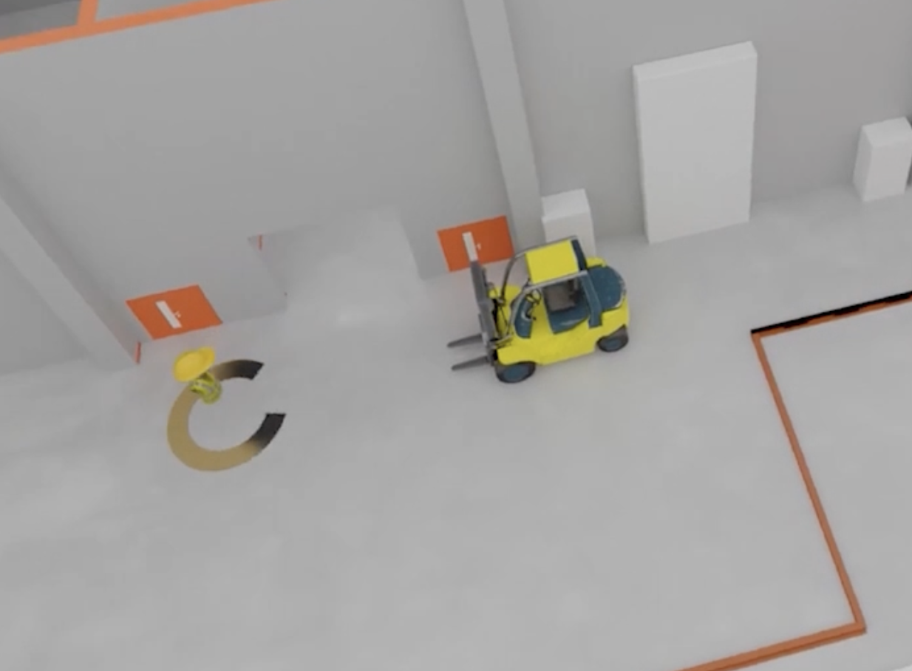
Digital Twin System Deployment at Sentics GmbH
End-to-end deployment of enterprise-grade digital twin systems using large-scale camera networks (8-160 cameras) for real-time spatial intelligence. Responsible for camera calibration, DeepStream pipeline configuration, AI model deployment, and production system maintenance. Technologies: Computer Vision, NVIDIA DeepStream, RTSP Streaming, Kafka, production monitoring with 24/7 uptime requirements.
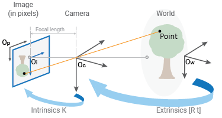
Camera Network Calibration at Sentics GmbH
Camera extrinsics calibration for large-scale production camera networks (10-160 cameras) at customer sites. Using a novel point-clicking methodology, I calibrate cameras that form the foundation for real-time localization and mapping systems. Contributing to calibration tool development to make the process scalable for enterprise deployments.
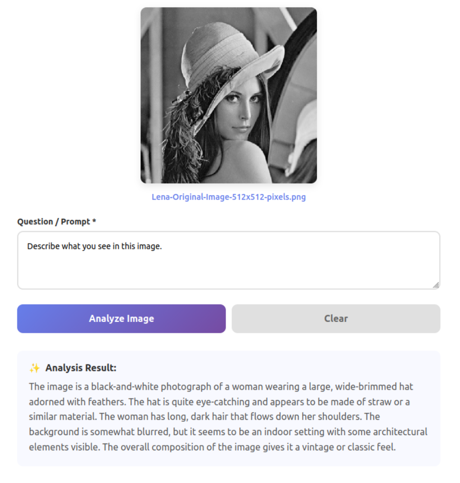
Vision Language Model Deployment at Sentics GmbH
Deployed Qwen2-VL on company servers with web dashboard for internal access. Integrated VLM into production load documentation pipeline with fixed prompts generating JSON outputs. Coordinated with dashboard team to feed structured data from visual documents into company databases. Technologies: Qwen2-VL, Python, web dashboard, server deployment, prompt engineering, database integration.
Academic Projects
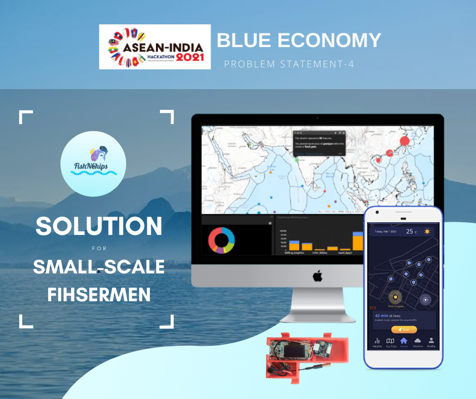
ASEAN-INDIA Hackathon (Winning Project)
Me and five other students formed a team and won ASEAN-INDIA International Hackathon 2021. This is an overview of our project from the Hackathon. We provided a small scale solution package for local fishermen. My tasks on this Hackathon are the data analysis and visualization parts, as well as dealing with ArcGIS to provide end users with interactive maps.
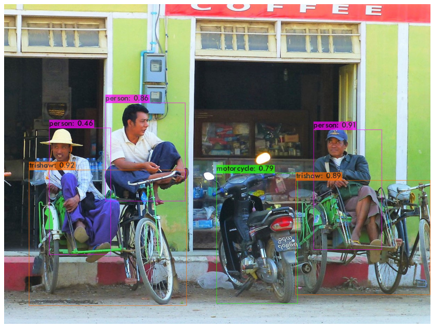
Custom Object Detection with YOLO
This is a project that I did back in 2019 & early 2020 for my final year thesis at Yangon Technological University. In this project, the pre-existing YOLO object detection model is customized to be able to detect local traffic in Burma, including pedestrians in local costumes, old local buses and unique local vehicles like trishaws. The project is written entirely in .ipynb format as I had to use Google Colab for the GPU requirement for the transfer learning process.
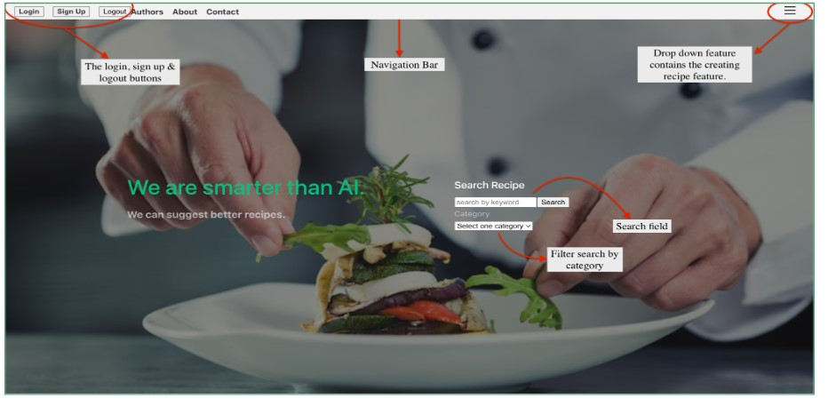
Software Agile Project Manager/Team Leader for a web-dev team of 11 students
This is a University project for Software Engineering module at THD. I worked as a team leader and led a team of 11 students to develop a website that displays & filters cooking recipes from a database. Pipeline used was Springboot for backend, Vue for Frontend & MongoDb for dataase (Springboot + MongoDb + Vue) & dockerized. The android part for this project is unfinished and still in mid-development stage. I mainly worked on backend team for this project. The repo in the link provided is a reupload version of the original that we hosted on Gitlab.
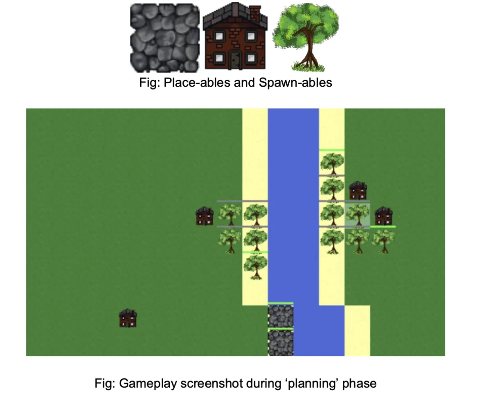
Flood Force - Strategic Flood Management Game
A strategic tile-based flood management game developed for the AI in Gaming course at THD. Players protect riverside communities from flooding using infrastructure and natural solutions. Features dynamic water physics, resource management, and educational content about sustainable flood management and climate adaptation. Published on itch.io with positive player feedback on gameplay and environmental awareness.
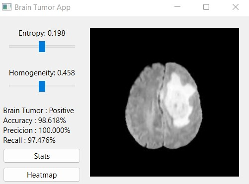
Brain Tumor Classifier
This project uses Machine Learning to classify brain Tumors on a specific dataset that provides necessary features for the model. The model is trained on a reliable dataset from kaggle. The UI provides sliders to adjust the features and the possiblity of a tumor given the adjusted values. The image from the dataset that has the closet values for the adjusted features is displayed on the UI. Necessary stats and metrics are also provided.
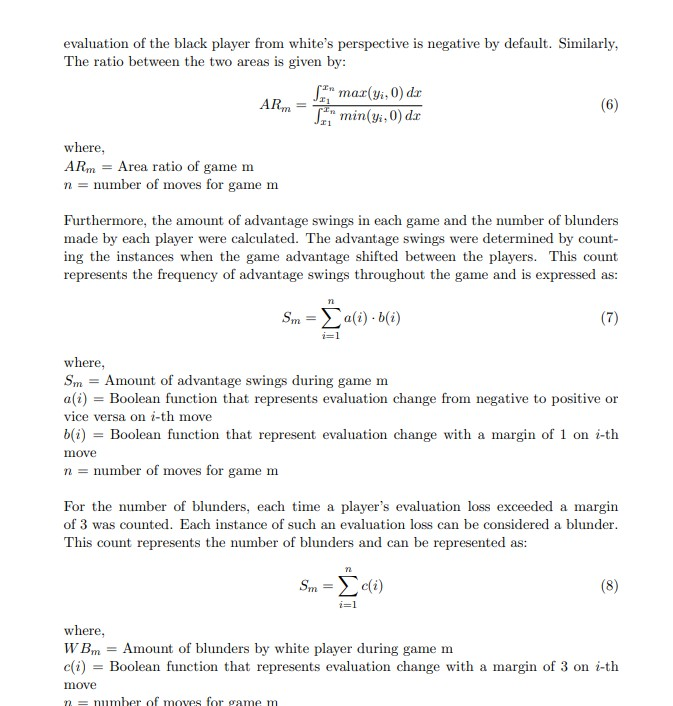
Machine Learning Model to predict Chess ELO
This is done as a part of ML module at THD. We researched on how to create an ELO-guessing model based on a chess games database. We came up with several equations to extract features. The report is written using LaTex. This thumbnail is a snippet of our report
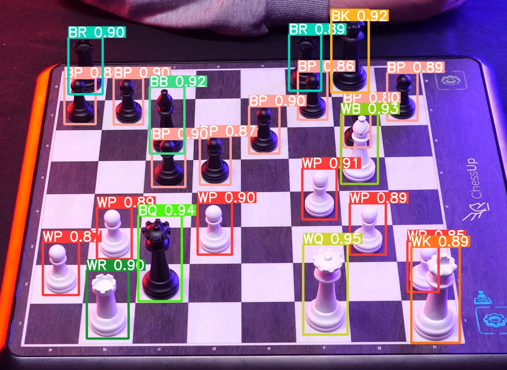
Chess-Piece Detection with YOLO
This is a project from Computer Vision module at THD. We implemented YOLOv8 to localize and classify chess pieces. This model can detect chess pieces. The detected class is displayed alongside the confidence level on the label. This project could be run on a video stream & also webcam compatible.
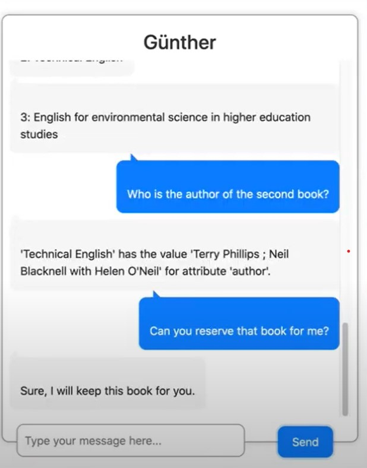
Library Assistant Chatbot
Günther is a chat bot designed to help with the process of finding a book from the library database of our University. This chatbot can browse through the books, suggest recommendations and provide information on the books.
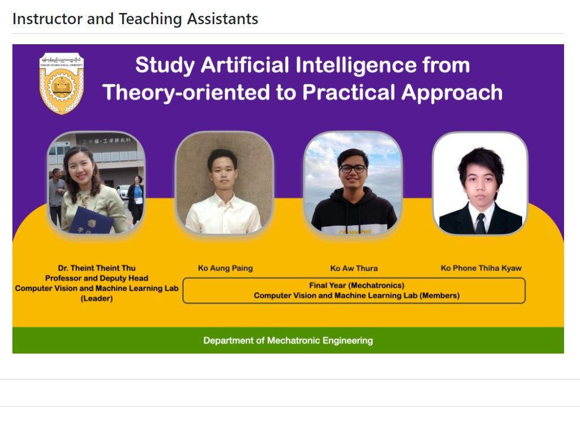
Teaching Assistant for AI module
Back in 2020 December, I helped Professor Dr. Theint Theint Thu as a teaching assistant for her AI module at Yangon Technological University. The course took place entirely online due to COVID-19. There were around 80 students in the online lecture room. My main contributions were on course week three, focusing on YOLO model & unsupervised learning. I have documented lectures for my parts using notebooks and they are also published on the course website.